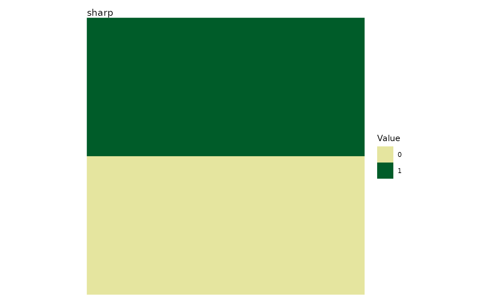
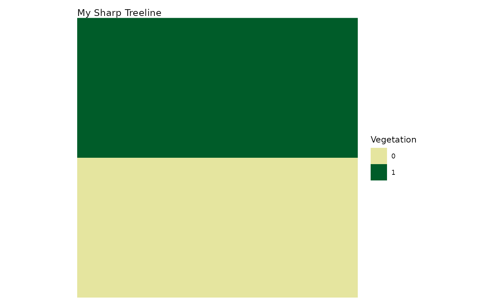
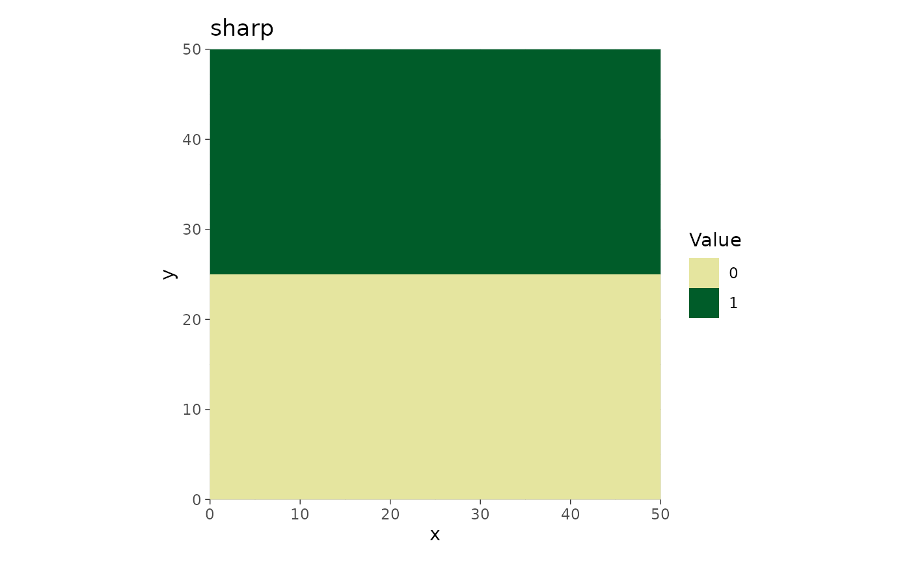
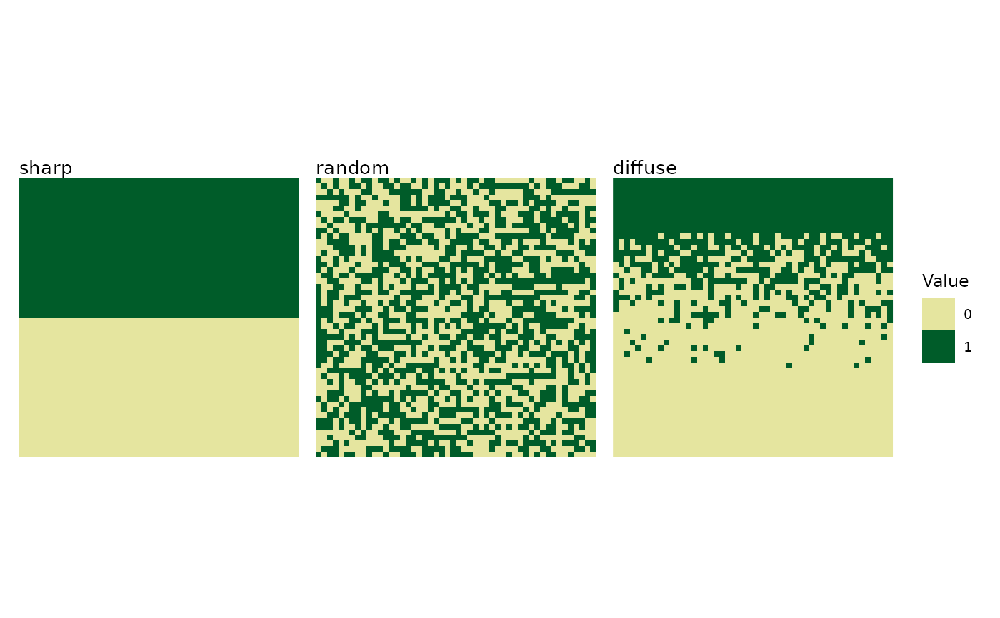
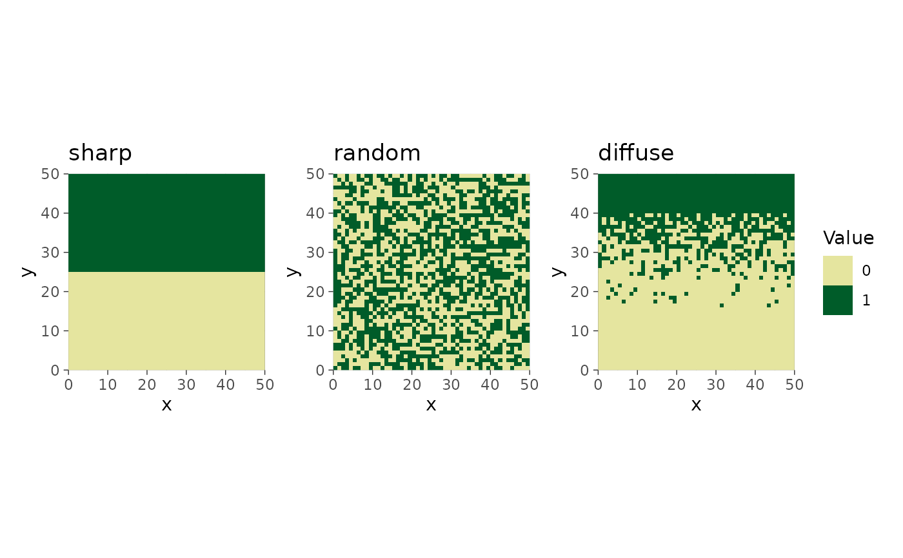
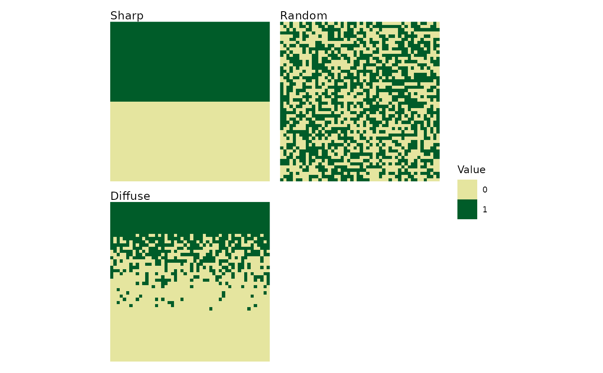
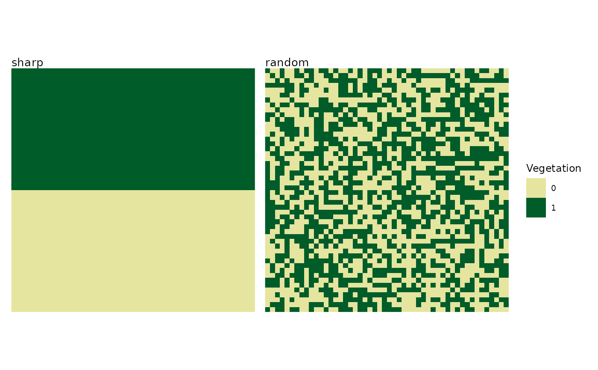
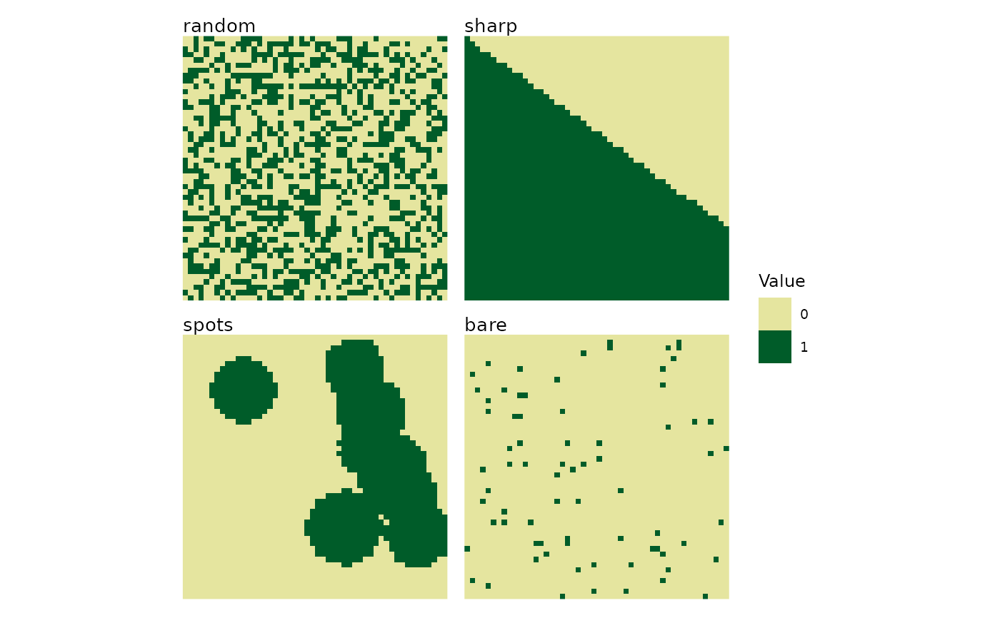

Plots one landscape or arranges several landscape plots in a grid.
Usage
plot_landscapes(
landscapes,
titles = "pattern",
show_legend = TRUE,
legend_title = "Value",
ncol = NULL,
max_landscapes = 36,
subset_index = NULL
)Arguments
- landscapes
A landscape object or a list of landscape objects, such as those returned by
create_landscape,create_landscapes, orlandscape.- titles
Character. One of "name", "pattern", "both", "none", a single custom title, or one custom title per landscape (default: "pattern"). A single custom title is repeated with a warning when several landscapes are plotted. With
subset_index, a vector of custom titles must match the subset length.- show_legend
Logical. Show one combined legend (default: TRUE).
- legend_title
Character. Legend title (default: "Value").
- ncol
Integer. Number of grid columns (default: NULL).
- max_landscapes
Positive integer. Maximum number of landscapes shown (default: 36). Use
Infto show all landscapes.- subset_index
Integer vector. Indices of the
landscapesto plot, in the requested order (default: NULL for plotting all landscapes).
Details
Use & to add ggplot2 elements to every panel, for example
plot_landscapes(landscapes) & ggplot2::theme_dark(). With multiple
landscapes, + modifies only the last panel.
See also
create_landscape, create_landscapes,
landscape
Other visualization:
plot_classified_landscapes(),
plot_metrics()
Examples
# Plot a single landscape
l <- create_landscape("sharp", width = 50, height = 50)
plot_landscapes(l)

# Custom title and legend for a single landscape
plot_landscapes(l,
titles = "My Sharp Treeline",
legend_title = "Vegetation")

# Use & (not +) to add ggplot2 elements to every panel
plot_landscapes(l) & ggplot2::theme_dark()

# Create a list of different landscapes
landscapes <- list(
create_landscape("sharp", width = 50, height = 50),
create_landscape("random", width = 50, height = 50),
create_landscape("diffuse", width = 50, height = 50)
)
# Default plot (3x1 grid)
plot_landscapes(landscapes)

# & applies to all three panels; + would only affect the last one
plot_landscapes(landscapes) & ggplot2::theme_dark()

# 2-column grid with custom titles
plot_landscapes(landscapes,
titles = c("Sharp", "Random", "Diffuse"),
ncol = 2)

# Plot only first two landscapes
plot_landscapes(landscapes,
subset_index = 1:2,
legend_title = "Vegetation")

# Create many landscapes and handle overflow
many_landscapes <- create_landscapes(n = 12, width = 50, height = 50)
#> ✔ Successfully generated all 12 training landscapes
plot_landscapes(many_landscapes,
max_landscapes = 4, # Show first 4 only
ncol = 2) # In 2x2 grid
#> Warning: Showing the first 4 of 12 landscapes. Increase `max_landscapes` to show more,
#> or use `subset_index` to select landscapes.
